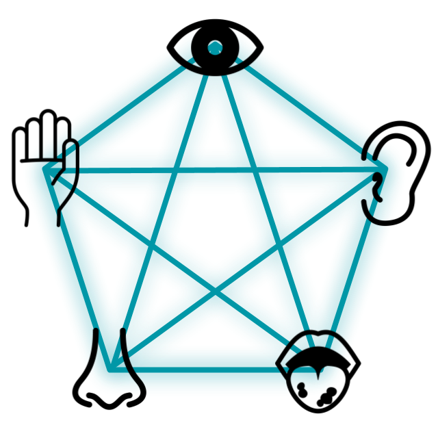

まとめ
IM概論A（中島担当回）
5. まとめ
クロスモダリティは、心を豊かにする手段になる。

-
このスライドでは、はじめに様々なクロスモーダル知覚の実例を通して、その不思議な性質について紹介しました。
-
さらに、人間の五感のメカニズムを理解し、五感に情報を呈示するインタフェース技術について学びました。
-
最後に、私たちの心をより豊かにする手段としてのクロスモーダル知覚に着目し、その可能性について考察しました。
IM概論A（中島担当回）
まとめ
ディスカッション 6
知覚・感覚の特徴を応用したアート表現について考えてみましょう。

-
5章では、授業全体のまとめをしました。
-
これまで学んできたような知覚の特性を利用したアート作品を何か知っていますか？また、自身でも何か作品のアイディアについて自由に考えてみましょう。